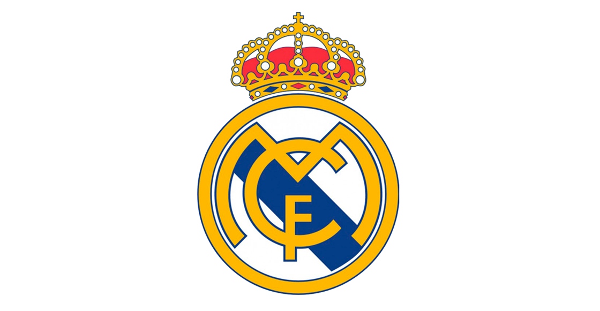
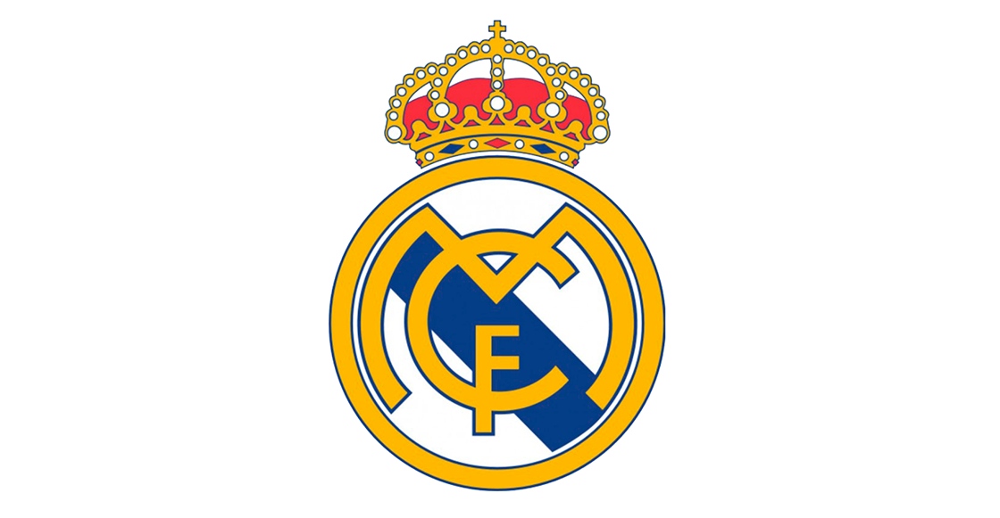
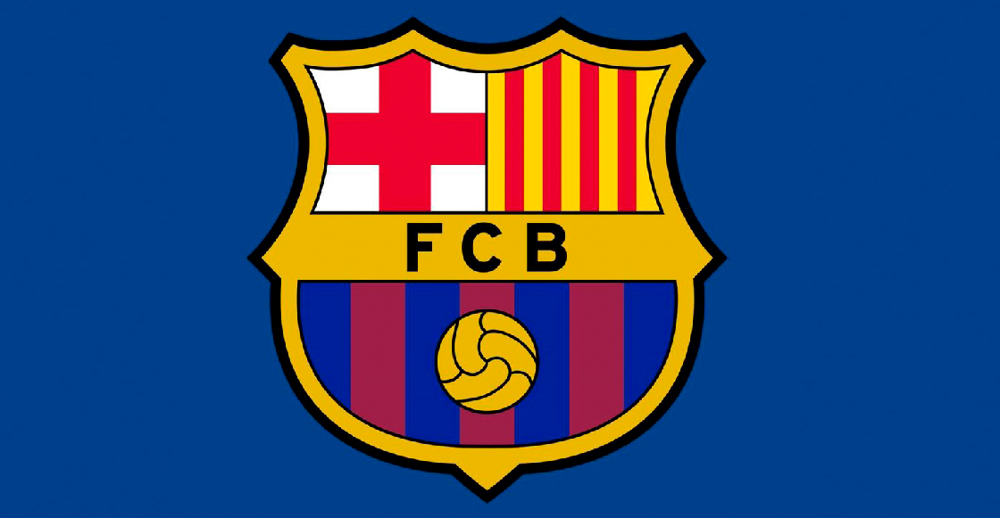
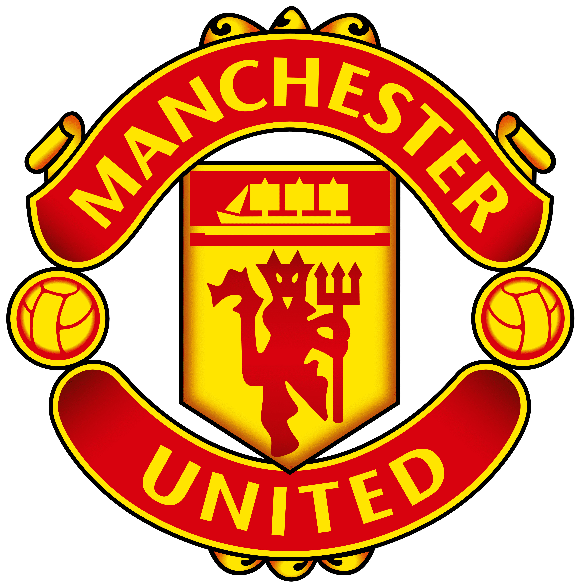

Real Madrid Club de Fútbol
El Real Madrid Club de Fútbol es un club de fútbol profesional con sede en Madrid, España.
El Real Madrid Club de Fútbol es un club de fútbol profesional con sede en Madrid, España.
El Fútbol Club Barcelona es un club de fútbol profesional con sede en Barcelona, España.
El Manchester United Football Club es un club de fútbol profesional con sede en Manchester, Inglaterra.
El fútbol es un deporte que une a las personas de todo el mundo. Los equipos de fútbol son una parte importante de este deporte, ya que representan la identidad y el espíritu de cada ciudad y país.

En esta página, hemos destacado algunos de los equipos de fútbol más populares del mundo: Real Madrid, Barcelona y Manchester United. Cada uno de estos equipos tiene un escudo distintivo que es reconocido por los fanáticos del fútbol en todo el mundo.